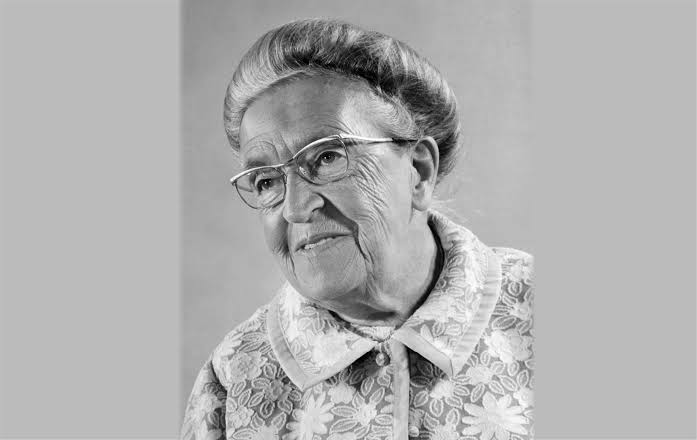
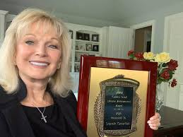
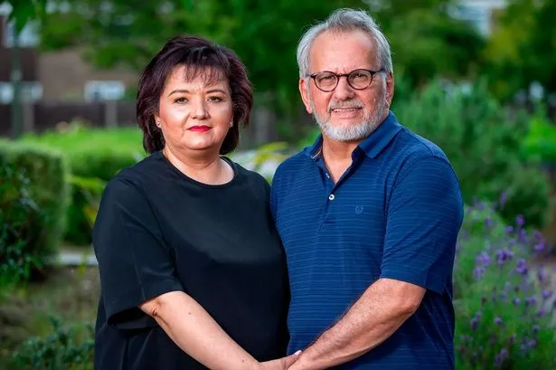
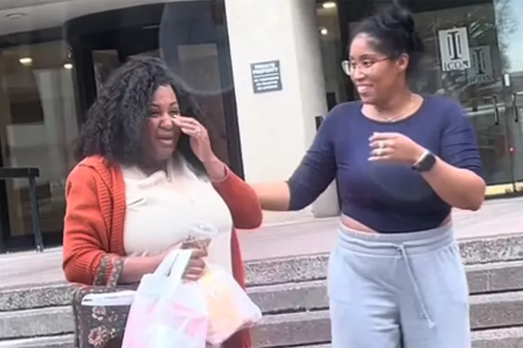

Příběh Corrie ten Boom
Corrie byla Nizozemka, která za 2. světové války ukrývala Židy. Skončila v koncentračním táboře, kde zemřela její sestra. Po válce jednoho dne potkala bývalého dozorce z tábora, který jí podal ruku a požádal o odpuštění. Corrie v sobě musela najít sílu odpustit – a i když to bylo těžké, dokázala to. Později řekla, že to byl jeden z nejsilnějších okamžiků jejího života.

Nelson Mandela – Odpustit po 27 letech vězení
Mandela strávil 27 let ve vězení za boj proti apartheidu. Po propuštění se stal prezidentem Jihoafrické republiky a odmítl se mstít. Naopak prosazoval smíření a odpuštění jako klíč ke sjednocení národa. Říkal:
„Když jsem vycházel z brány směrem ke své svobodě, věděl jsem, že pokud neopustím hořkost a nenávist, zůstanu ve vězení.“

Stormie Omartian: Od zneužívání k odpuštění
Stormie Omartian prožila dětství plné fyzického i psychického týrání. V dospělosti hledala únik v okultismu a drogách, což ji přivedlo až na pokraj sebevraždy. Zlom nastal, když objevila víru, která jí pomohla najít cestu k uzdravení a odpuštění těm, kteří jí ublížili. Své zkušenosti sdílela v knize "Stormie. Příběh odpuštění a usmíření".

Elizabeth Jimenez: Odpustila muži, který způsobil smrt její dcery
V roce 2017 přišla Elizabeth Jimenez z Guilfordu o svou dceru Mariu při autonehodě, kterou způsobil Nick Tay svou bezohlednou jízdou bez pojištění. Navzdory této tragédii se Elizabeth rozhodla Nickovi odpustit. Po jeho propuštění na kauci ho s manželem Fernandem pozvali, aby s nimi bydlel, což jim pomohlo společně se vyrovnat se ztrátou. I po Nickově odsouzení na pět let vězení a následné deportaci do Singapuru udržují blízký vztah a Elizabeth ho vnímá jako vlastního syna.

Alnissa Williams: 37hodinová cesta za odpuštěním matce
Alnissa Williams měla dlouhá léta napjatý vztah se svou matkou kvůli minulým neshodám a odloučení. Pocítila však potřebu uzdravení a rozhodla se podniknout 37hodinovou cestu z Kalifornie do Virginie, aby se s matkou usmířila. Jejich emotivní setkání, zachycené na TikToku, se stalo virálním a znamenalo začátek obnovy jejich vztahu. Alnissa zdůrazňuje, že odpuštění je klíčem k vnitřnímu klidu a umožňuje budovat nové vzpomínky.

Ruby Tui: Překonání traumat z dětství skrze odpuštění a rugby
Novozélandská ragbistka Ruby Tui prožila dětství poznamenané otcovým alkoholismem a matčiným násilným vztahem. Rugby se pro ni stalo útočištěm a cestou k osobnímu růstu. Navzdory těžkým začátkům se stala inspirací pro mnohé ženy a aktivně se věnuje osvětě v oblasti duševního zdraví. Její příběh ukazuje, jak odpuštění a sport mohou vést k překonání minulých traumat.